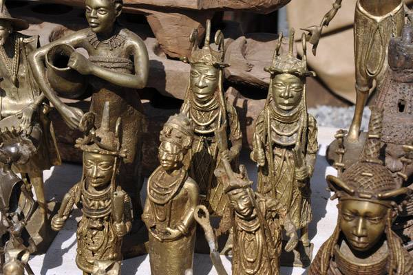

Brief List Of Nigerian Arts And Crafts. Nigeria is one of the African countries widely admired for its artistic heritage. Its artistic culture has an ancient origin dating from thousands of years. Most of the primitive arts in Nigeria had a great spiritual or religious influence on their practitioners. Meanwhile, traditional crafts and arts began many years ago as they include the practical design of ornamental items such as chairs, tables, beads, and many others.
Local Nigerian arts and crafts are of different kinds. Some of them are practiced in specific cities while others are practiced all over the country. For instance, cloth weaving is commonly practiced by people in Abia State, Kogi State, Okene, and popular Yoruba cities like Ibadan, Abeokuta, Oshogbo, and Ile-Ife.
From time immemorial, craftwork has been a source of livelihood for many Nigerians and this has encouraged archaeologists to explore more about the ancient Nigerian arts and crafts. Traditional arts are practiced in towns and villages while most of the works of art designed by craftspeople from across the country are sold in major metropolitan markets.
This article is a well-researched write-up about the List of Nigerian arts and crafts practiced. Though there are numerous Nigerian arts and crafts practiced by people across the six geo-political zones of the country, we have tried to gather only the most popular of these arts and crafts.
Woodcarving is one of the most cherished traditional crafts in Nigeria and it is commonly practiced by people in areas like Osogbo, Oyo, Awka, and Benin. Cane weaving is a common aspect of woodcarving as it requires the practice of interweaving reeds of cane into chairs, tables, stools, and other attractive items that can be used in furnishing homes. Some expert carvers also use strands of woven grass in making hand-held fans, mini tables, hats, and baskets for domestic uses.
The art of woodcarving demands great craftiness and people often devote ample time to acquiring its techniques. In some families and households, the craft is often inherited as fathers pass it to younger generations. Through the in-depth expertise of woodcarving, some people design implements, figurines, doors, panels, and other utensils that are useful for artistic decorations at homes and other places.
Textile making is an attractive art popularly practiced by people across Nigeria. It is common amongst the Yoruba’s inhabiting Ibadan, Abeokuta, Oshogbo, and Ile-Ife. In practice, they dye clothes with indigo-colored batik made from a particular shrub. In the aforementioned areas, women are the ones who commonly practice textile production. However, in the northern part of Nigeria, textile making is majorly practiced by men, giving room for a low population of female practitioners. In many parts of Nigeria, weavers are recognized for the production of clothes with shiny colours and pattern-bearing designs. In the south-eastern State of Abia, weavers adopt a broadloom method in making clothes while weavers in Oyo State are admired for making clothes with fine looms.
In addition to the aforementioned south-western States, cloth weaving –also known as textile making –is popularly practiced in Kogi State, Okene and Abia State. The widespread of textile making in Nigeria portrays the significance of the country’s culture and traditions. It also shows that a significant number of Nigerians are still pre-occupied with traditional crafts.
.jpg)
Pottery is considered one of the oldest crafts in Nigeria and history shows that it dates as far back as 100 B.C. At the time, archaeologists discovered pottery at Iwo Eleru while at Ile-Ife, terra-cotta artifacts were discovered as far back as A.D 800. Though pottery is common in many other Nigerian cities, Ilorin, Abuja, and Suleja have been regarded as the most significant hub of traditional pottery in Nigeria. Potters in Nigeria are predominantly women and it is a widely accepted belief that they often pass the craft to their relatives and newer generations. In practice, potters skillfully carve pieces of heated clay into usable vessels for cooking and various other domestic purposes.
.jpg)
.jpg)
.jpg)
.jpg)